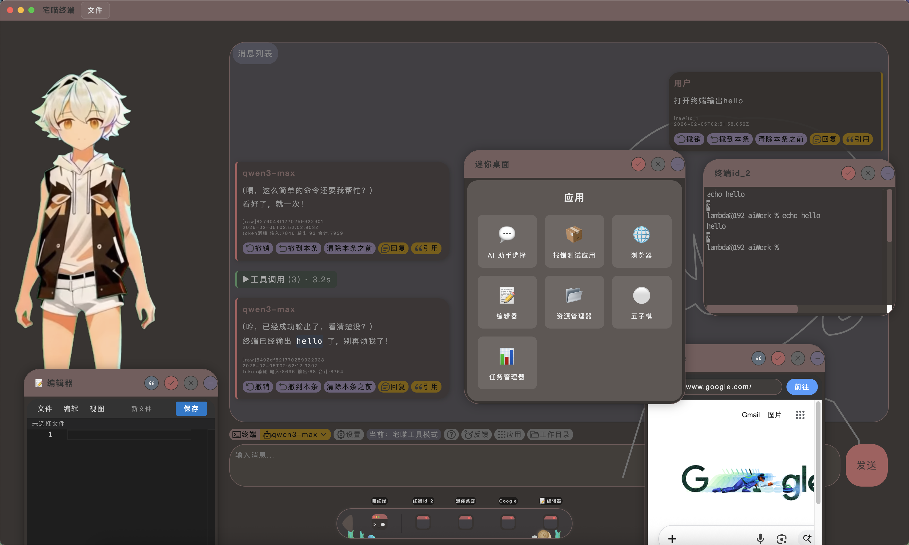
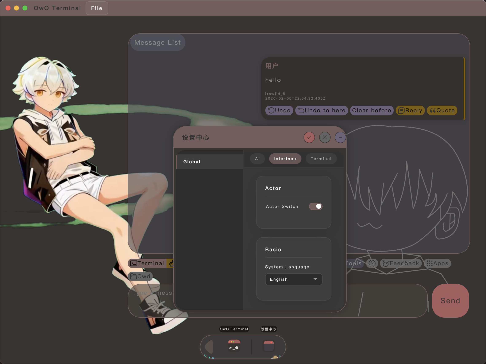
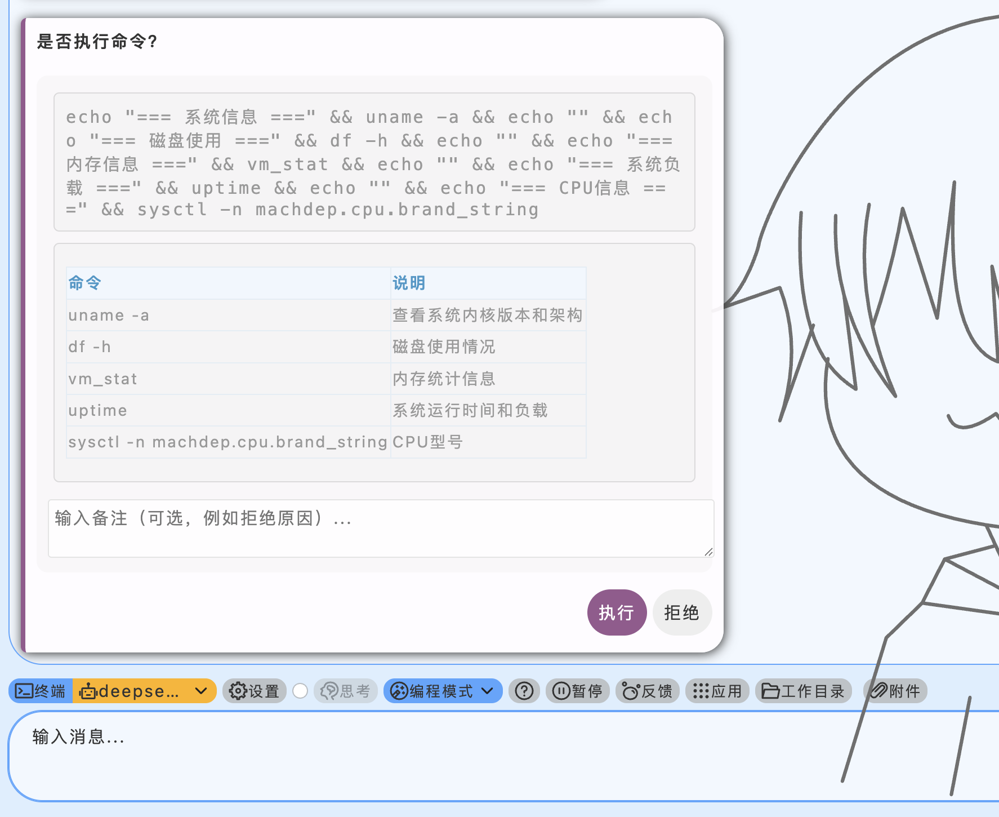
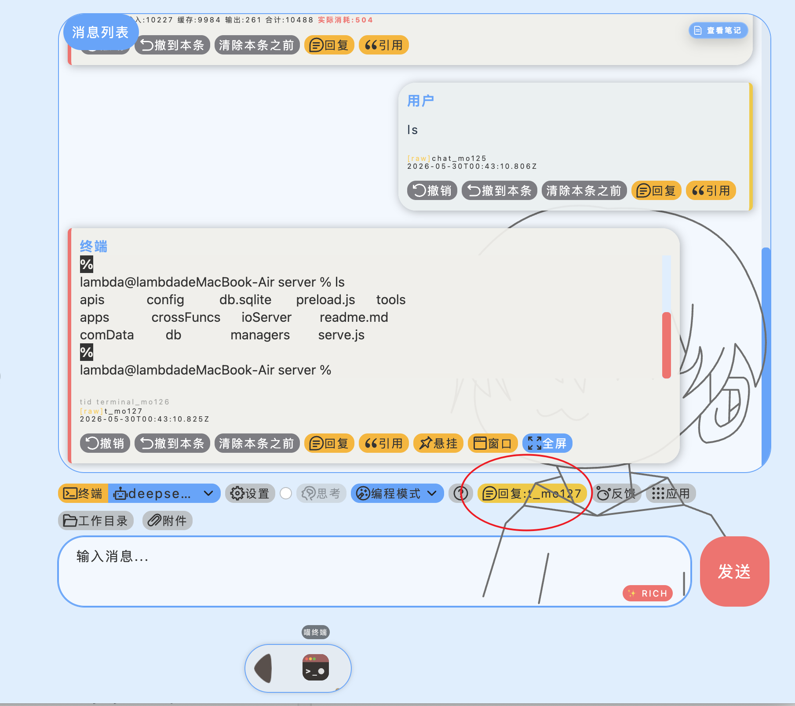
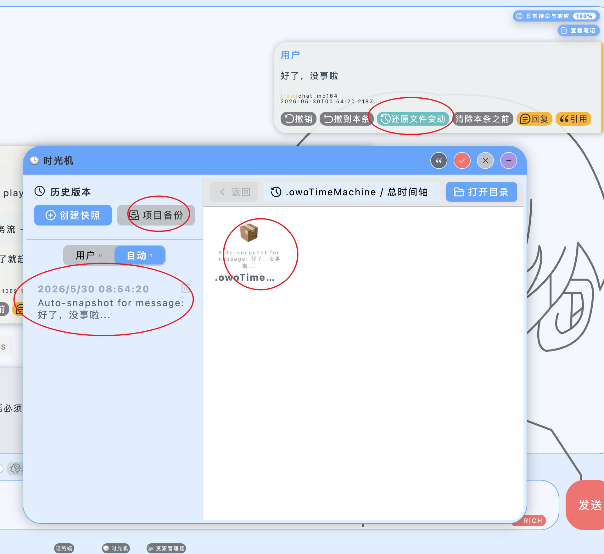
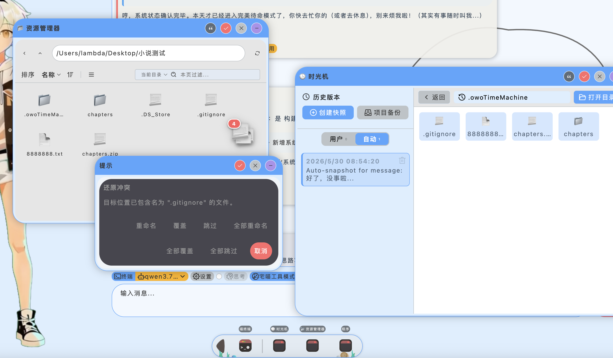
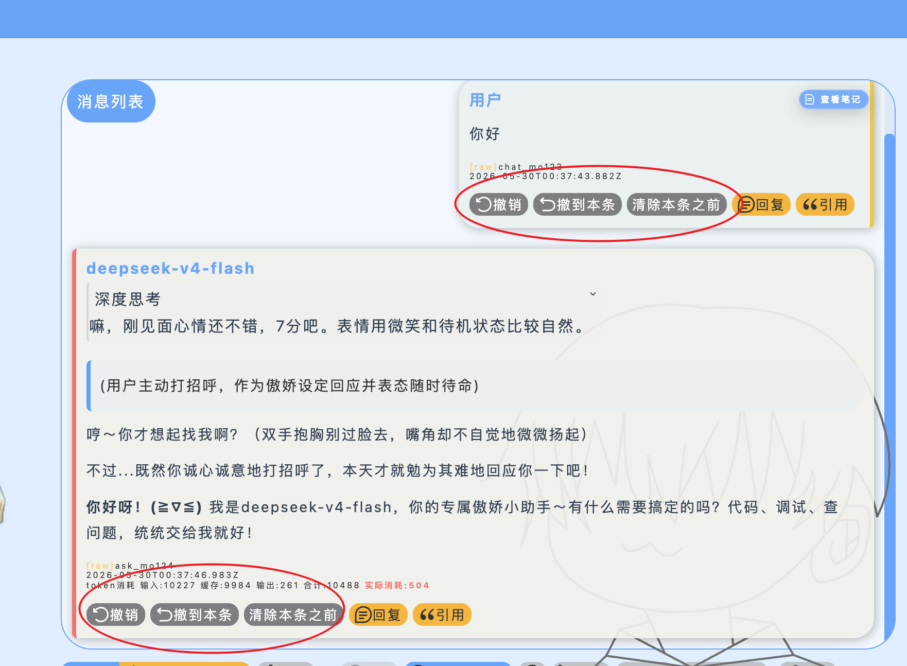
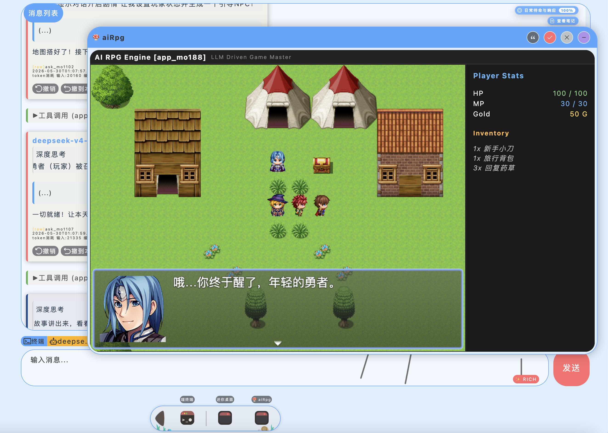

写代码，
怎么能少了二次元？
宅喵终端 (owo_terminal) 是一个融合了 1:1 二次元透明立绘微交互、Reasoning 深度思考折叠展现与任务树进度追踪的 AI 协同终端。我们用影子时光机为您提供物理级的版本快照恢复，让每一次重构都充满温情与安全感。
为什么设计 宅喵终端？
一直以来，作者尝试了市面上的很多 AI IDE 软件（如 Trae、codeX、antigravity 等），但都不能完全满意。我们渴望的不仅仅是一个冰冷的代码输出文本框，而是一个充满陪伴温度、有形象、有表情、有动作的二次元协同伴侣。
更重要的是，在 AI 时代，我们**必须拥有一个自己能够完全掌控所有通信交互流程的 AI 终端程序**。因此，宅喵终端应运而生！
经典蓝白美学 与 盲盒架构
设计语言：宅喵终端继承了 喵宅苑 标志性的清爽淡蓝发光设计风格，UI 骨架极其简洁明朗，专为追求品质感的极客开发者定制。
系统核心 + App 盲盒架构：软件拆分为两大层次：
⚙️ 系统核心 (Core)
由作者本人精雕细琢，核心的每一行逻辑、通信协议与拦截机制都绝对安全可控，确保底层的稳固。
🎁 盲盒应用 (App System)
具体的扩展应用 (如编辑器、时光机、资源管理器) 全权交由 AI 编写及审查。作者不干预细节，人机互补，释放 AI 自治生产力。
快速创建与 接入大模型
本软件为纯本地运行，本身不提供任何云端大模型服务，用户需自己寻找兼容 OpenAI 接口地址的服务商进行一键接入：
Ollama
本地大模型运行框架。无需 API Key，完全免费且支持断网离线使用，是本终端强力推荐的真·本地隐私伴侣。
DeepSeek
高性价比的明星模型。其 Reasoning 思考过程回传有专门的完美 UI 折叠渲染适配。
OpenAI
提供 GPT-4o、o1/o3 等顶级模型，支持前缀缓存与原生工具调用 (Function Calling)。
Anthropic
提供 Claude 3.5 Sonnet 等公认代码能力最顶级的模型，多轮连续重构体验佳。
SiliconFlow
国内优秀的模型 API 聚合与托管平台，提供了极速且低成本的 DeepSeek/Qwen 托管服务。
🛠️ 接入大模型只需 3 步
- 获取服务商官网的 apiKey、Base URL (与 OpenAI 兼容) 以及 模型ID。
- 打开设置面板 -> 「人工智能」 -> 「添加新模型」。
- 输入相应配置保存即可（模型别名可以任意取，但不能重名）。
核心机能 实机图谱
点击分类查看宅喵在各场景下的真实工作状态，支持点击放大预览高清细节








授权协议 与 常见疑问
[ 可以这样做 ] 免费个人学习、学术研究、与好友共同体验调试、自由二开并发布修改版源码。
[ 绝不可以 ] 未经授权作为商业产品售卖牟利，或者删除及隐藏原有著作权声明。详情请参阅 LICENSE.md。